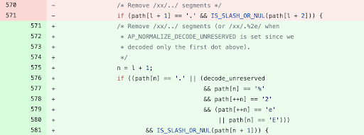

cgi-bin folder bypass (CVE-2021-41773)
Apache HTTP Server 2.4.49 and not
earlier versions (CVE-2021-41773) is vulnerable to the following payload
Apache 2.4.49 check for presence of
path traversal characters (“../”) but was incomplete. It did not take into account the possibility of an attacker
providing the percent-encoded versions of these characters.
The new fix that went into the "httpd"
server version 2.4.50 now checks for “%2E” and “%2e” which is the encoded representation of the dot
(“.”).
"/cgi-bin/.%2e/%2e%2e/%2e%2e/%2e%2e/etc/passwd"
Note:
Only If
files outside of the document root are not protected by
"require all denied" these requests can succeed.
Otherwise it will show the error
“403
Forbidden. You don’t have permission to access
{path}.”BurpBounty ExtensionWe can also use
this extension to check this vulnerability with the LinuPathTraversal profile of BurpBounty
• Profiles
collection:
https://github.com/emadshanab/Burp-Bounty-free-Profiles-Collection
◇ seems a good one:
https://github.com/SummerSec/BurpBountyProfiles
▪ Linux Path Traversal:
https://raw.githubusercontent.com/SummerSec/BurpBountyProfiles/main/Linux-PathTraversal.bb
◇ Official:
https://github.com/wagiro/BurpBounty/tree/master/profiles•
Add vulnerability 2.4.49:
https://twitter.com/BurpBounty/status/1445702174193815552